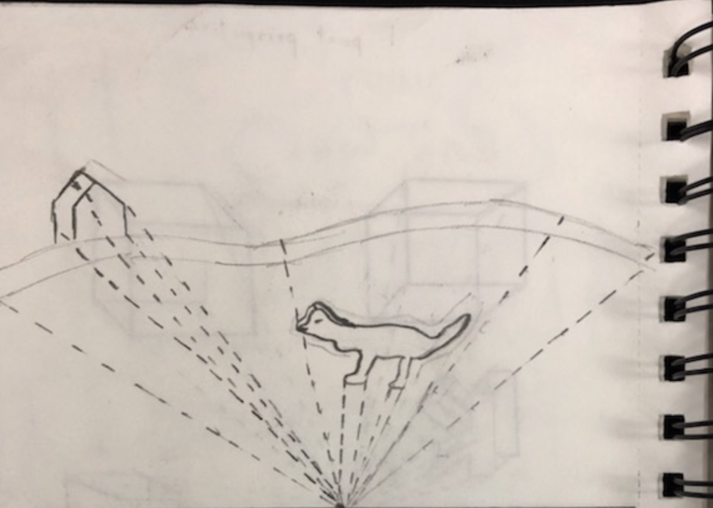

Final 1-Point Perspective Sketch

Mediums: 2.0 Lead Pencil, Sketchbook Paper
This was our final one-point perspective drawing. It was a fairly lousy effort on my part, but it did convey the technique we were learning, to some level. It displays a mountain, as well as a house and a cow both on top of the mountain. With the horizon line and vanishing point, I was able to get the doubled effect of each object. However, it wasn't my best work and I could have done it much better.